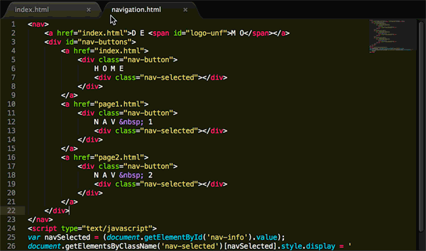

D E
M O
H O M E
N A V 1
N A V 2
Try changing any of the HTML fragments inside
/concactus
!
Make any changes to
footer.html
or
navigation.html
, run the
concactus.py
again, and viola, simple imports written directly into your HTML files!

Grab on GitHub (+README)